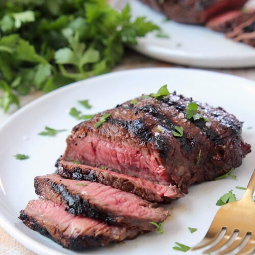

Steak Recipe

Description
It’s easy to make THE BEST sirloin steak marinade with just a few simple ingredients. Quickly whisk the marinade ingredients together, marinate the steak, then toss it on the grill for the best flavor!
Ingredients
- Balsamic Vinegar
- Low-sodium soy sauce
- Olive oil
- Worcestershire sauce
- Honey
- Dried Italian seasoning
- Dried mustard
Steps
- Combine balsamic vinegar, low-sodium soy sauce, olive oil, Worcestershire sauce, honey, Italian seasoning and mustard in a gallon size zipper bag or large bowl.
-
Add the steaks and marinade for 20 minutes, or up to 8 hours.
Go back to main page